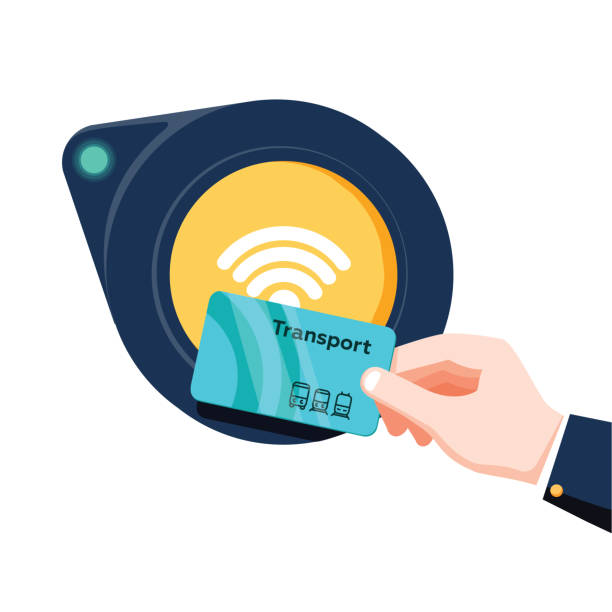
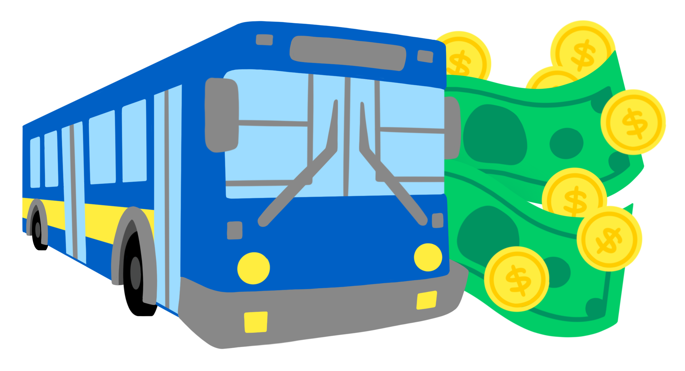
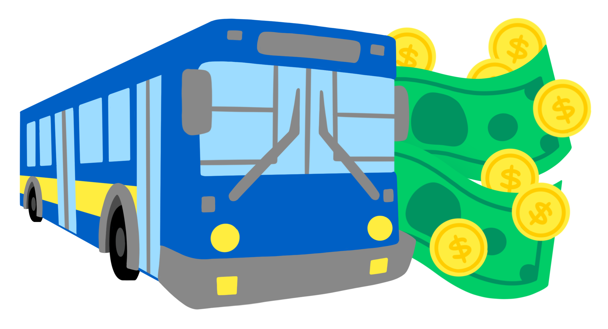
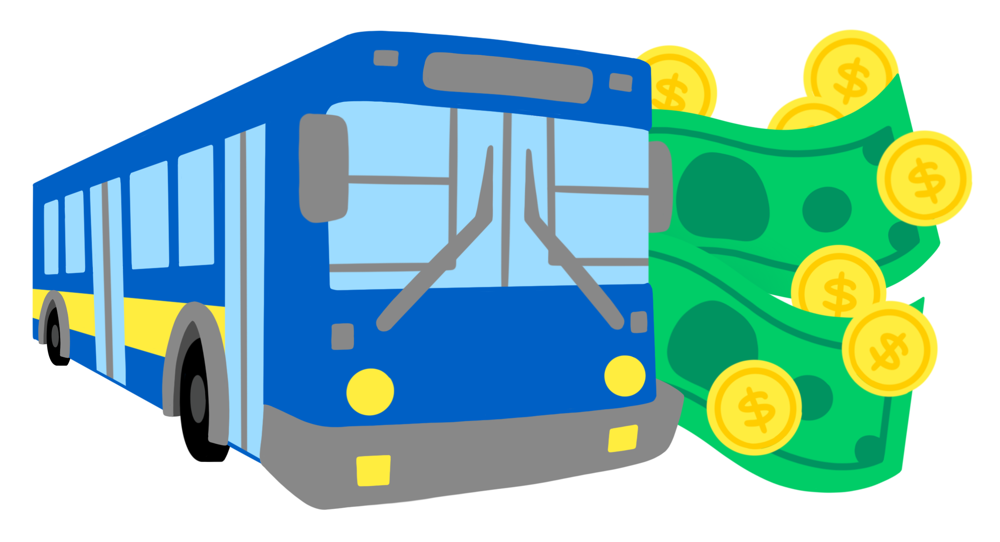

Transit Knowledge Site Plan

Welcome to the Transit Knowledge Base Site! We hope you find this tool to be effective for your everyday needs as you assist our customers. Feel free to browse around and familiarize yourselves with this new tool, as you use it daily on your phone calls.
We believe in being efficient, accurate and professional when it comes to servicing our customers. Quality Customer Service is the best kind of Service.
What is Transit Card?

 


Transit Card is a plastic transit card that is used for travelling on all forms of transportation in your area. This card can be used either in physical form by having the plastic card with you OR virtually, by adding the card to your mobile wallet. The usage of the card is as simple as 1,2,3.
1. Buy a Transit Card 2. Add money to it. 2. Tap it on your choice of transportation to pay your fare and enjoy your ride.